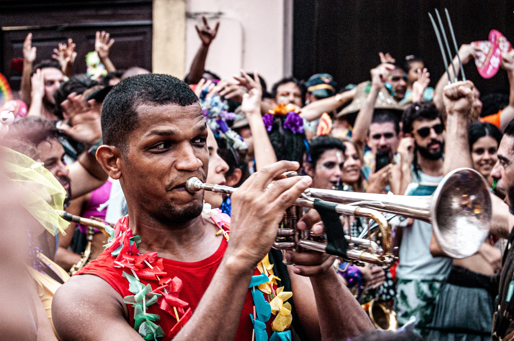
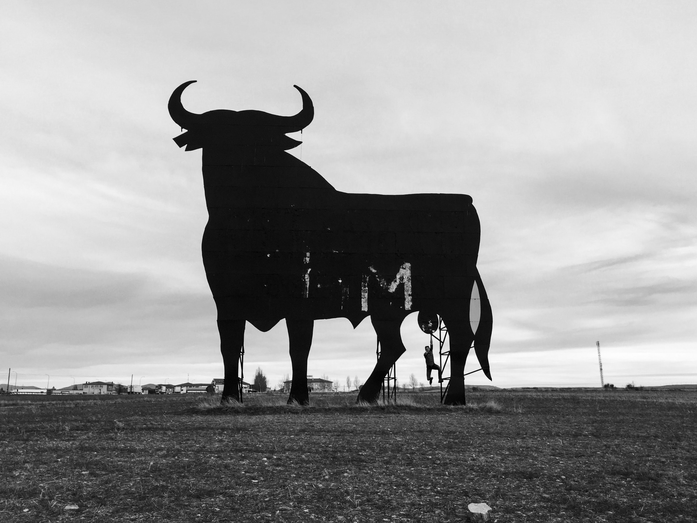

Brazil is one of the most culturally diverse countries in the world. Hence this webpage is only scratching
the surface of all of the colorful Brazilian traditions, however, it can give you a glimpse into it.
Carnavals - Probably what Brazil is the most known for in the world is its colorful parades and
rallies with loud cheerful samba music. That's called Carnaval, a very important festival especially in the
cities of Rio de Janeiro and Salvador. The performers spend many months practicing for the
parade.
Reveillon - It is Brazil's own New Year celebration. During the time, they wear all white (white
represents peace) clothes - mostly casual beachwear,
eat special buffets and watch fireworks by the beach at night. Small boats full of trinkets are sailed down
water bodies
for goddess Yemenja. New Year is often considered as a time to party with friends rather than family time
like Christmas.

Bumba-meu-boi - It is one of Brazil's many regional festivals, celebrated in Sao Luis. The festival
involves acting out a play, in this case, it is acting out the murder and resurrection of a bull. It is
meant
to mock and criticize people of a higher class by those of a lower class.